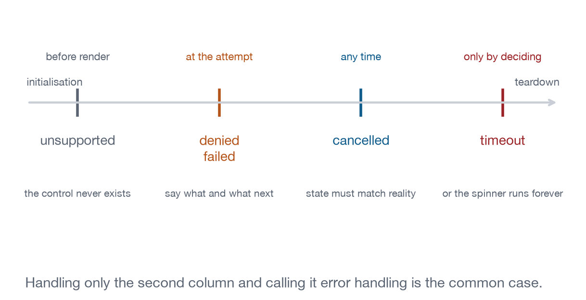

Chapter 6
Entries, Recipes, and the Discipline of Degradation
The two templates the rest of the book is written to, the five failure modes every capability has, and why the failure section is the one that earns its keep.
Two shapes, repeated throughout. Parts II and III are capability entries and Part V is recipes. Both templates are set out below so you can hold the rest of the book to them and see where it falls short. Where an entry says nothing about a section, the omission is deliberate: picker.color has no interesting lifecycle, and inventing a paragraph about one would be worse than the silence.
What is in a capability entry?
Each entry answers eleven questions in the same order, so that a reader who has read one entry knows where to look in all eighty-nine. The order is not arbitrary: it runs from why you would want the capability, through what the user sees, to what your code and the host each owe, and ends at the two sections that decide whether it works in a host you have never opened, which are failure modes and conformance tests.
Capability. Identifier, level, tag, and ground. Generated from the registry, so the prose cannot contradict it.
Motivation. Why an application needs it. Where the answer is “it does not, but users expect it”, the entry says so: dialog.alert is one.
User experience. What the person sees and does, from the outside. For file.export: a button appears, they press it, the host asks where to save.
Application behaviour. What your code does, including at startup. For file.export: check hostCapabilities.downloadFile in the initialize result, and render the button only if it is there.
Host behaviour. What the host owes you. For file.export: confirm with the user, derive the filename from the last segment of resource.uri, sanitise it against path traversal. Most documents omit this half, and it is the half that decides whether you work in an untested host.
Lifecycle. Initialisation, execution, cancellation, completion, destruction. Most entries have nothing to say. lifecycle.beforeClose and tool.invoke have all of it.
Security. Which boundary it crosses and what the host may do about it. For file.export: bytes leave the sandbox, so the host may refuse on size or policy.
Accessibility. Keyboard, focus, name and role, scaling, motion. Not a section at the end of the book. A section in every entry, because that is the only way it survives contact with a deadline.
Failure modes. Unsupported, denied, cancelled, timeout, failed. Five of them, always, in that order.
Minimal example. The smallest running demonstration. file.export is in lab-clipboard, three buttons and about 20 lines.
Extracted from from apps/labs/lab-clipboard/index.html
$("#export").onclick = async () => {
if (!bridge.hostCapabilities.downloadFile) {
say("This host has no downloadFile capability, so there is nothing to "
+ "fall back to: a sandboxed frame cannot save a file on its own.");
return;
}
const result = await bridge.downloadFile({ contents: [{
type: "resource",
resource: { uri: "file:///regions.csv", mimeType: "text/csv", text: csv() },
}] });
// The user cancelling the save dialog lands here, not in a catch. A view
// that skips this check tells them the file was written when it was not.
say(result?.isError
? "The host declined to save it, or the user cancelled."
: "Handed the file to the host. The host decides where it lands.");
};That is three of the five failure modes in one handler. Unsupported is the capability check at the top. Denied and cancelled both arrive as isError: true on a result that resolved normally, which is the case most implementations miss, because a promise that resolves looks like success. Timeout and failed reach the caller as a rejection, and the shape generalises: check the capability, say something true when it is absent, and otherwise hand the host a standard MCP content block and let it decide where the bytes land. Nothing here reaches the filesystem, because nothing in a sandboxed frame can.
Conformance tests. The assertions that decide whether an implementation has it. For file.export: ui/download-file is sent when downloadFile is present, and never sent when it is absent.
Not every entry uses all eleven. picker.color has nothing to say about lifecycle, because a native colour input opens and closes without the protocol learning anything about it. The template is a checklist for the author, not a quota, and silence means the content was one sentence long and the sentence was obvious. Padding those sections would make the book longer and the template useless, because a heading that is always present stops being a signal.
The five failure modes
This is the part to internalise, because it is where the difference between a demonstration and an application lives. A demonstration handles the path where everything works. An application handles five, and four of them are more likely than the first on any given day in a host you have not tested.
Unsupported. hostCapabilities.downloadFile was absent at ui/initialize. Do not render the export button at all. Not disabled with a tooltip, not showing an error when pressed: absent.
Denied. ui/open-link came back with a JSON-RPC error. Show the host’s message next to the control and leave the control enabled: “The host declined to open that link” says what happened and what to try. “Error” says neither.
Cancelled. Someone sent notifications/cancelled, or the host sent ui/notifications/tool-cancelled. Report where it stopped. Recipe 11 writes “Stopped after 3 of 5 steps. Completed steps were not rolled back.” Resetting the bar to zero claims nothing happened, and three steps happened.
Timeout. No answer at all. Give every request a deadline, 8 seconds is a reasonable default, and treat expiry as a failure with a retry. Skip this and you ship a spinner that runs until the user reloads the host.
Failed. The tool ran and returned isError: true. Its content carries three facts: what failed, what state that leaves, and what to do. “The index volume is full, so nothing was written. Free space and retry.” is 14 words carrying all three.
On the wire that is an ordinary tool result with a flag, which is why it reaches your code as data and never as a thrown exception:
Illustrative, not run
{
"isError": true,
"content": [{ "type": "text", "text":
"The index volume is full, so nothing was written. Free space and retry." }]
}The distinction that matters is between this and a JSON-RPC error object. A JSON-RPC error means the request was never processed. isError: true means the tool ran and reported a failure, and the difference decides whether a retry is safe.

They become discoverable at different moments, which is why naming all five matters. Unsupported is known at ui/initialize. Denied and failed arrive with the response. Cancelled arrives at any time, from either side. Timeout you decide yourself.
An application that handles only “failed” and calls it error handling has covered one case in five, and not the most common one. Unsupported happens on every host that is a level below you, which over a product’s life is most of them.
What is in a recipe entry?
Part V uses a different template, because a recipe is an argument. A capability entry claims that one operation behaves a certain way. A recipe claims that a recognisable application can be built out of those operations and names exactly which ones it needed, so its template is organised around evidence: what it reproduces, what it exercises that nothing before it did, and what it does when the host says no.
Goal. The conventional application being reproduced, in one line. Recipe 5: “editable grid computation”.
Capability delta. The primitives this recipe exercises that no earlier one does, generated from the registry. Recipe 1 claims 16; Recipe 13 claims 4. An empty delta means the recipe gets merged or deleted.
Surface. What it looks like and how much room it needs. Recipe 1 is one column at any width and asks for maxHeight: 620.
Components. Which Part IV components it composes, all from apps/lib/view.css.
Atomic capabilities. The full list, generated from the registry.
Local and agentic interactions. The Chapter 4 split, as a table, before any code. Recipe 1 lists 6 local and 4 crossings.
Host dependencies. What it needs by level, so you can tell whether it runs in your host. Every recipe here renders at level 1 with reduced function.
Failure cases. What happens when each dependency is absent. Recipe 6 sends its export to the clipboard when downloadFile is missing, and says so in a toast.
Accessibility. The keyboard-only path through the application, stated as a route a reader can follow rather than as a claim. Recipes 6 and 7 describe how a drag is performed without a pointer, because both are canvases and a canvas is where this is hardest.
Conformance checks. The observable behaviours, phrased as the harness asserts them. make render runs 151 of these against real servers.
Why every listing has a tag
One more convention, visible on every code block in this book. A tag above each listing says where the code came from, because a reader who cannot tell which listings are load-bearing has to treat all of them as suspect:
Extracted means the lines are read out of a file the tests run. The file name is given, and the demonstration on the same page is running it.
Captured means real output from a real run, quoted verbatim, including the parts that are inconvenient. 3 listings in this book are captured, and one of them is a test run reporting its own failures.
Illustrative means nothing executes it: message shapes quoted from the specification, and sketches of code you might write. 25 of the 99 listings.
Books about protocols accumulate code that used to work, and a reader who cannot tell which listings are load-bearing has to distrust all of them. tools/check_listings.py checks all 71 extracted listings against their files line by line.
A worked failure table
Here is the same capability, file.export, written out as the template asks, so that the shape is concrete before Part II starts using it eighty-nine times. Read the middle column first. Knowing when you learn about a failure determines where the handling code goes: an initialisation-time answer belongs in the code that decides what to render at all, and a click-time answer belongs next to the control.
| Mode | When you learn | What the interface does |
|---|---|---|
| Unsupported | Initialisation | No export control is rendered. Copy is offered instead. |
| Denied | The click | “The host declined to save that file.” The control stays. |
| Cancelled | The click | Nothing. The user changed their mind and the interface is unchanged. |
| Timeout | Your deadline | “No answer from the host.” The control returns to idle. |
| Failed | The click | The host’s message, verbatim, next to the button. |
Five rows, and notice that three of them leave the interface in a different state and two leave it identical. Cancelled and unsupported both produce no error and no message, for opposite reasons: one because nothing was attempted, the other because nothing was ever offered.
The row people skip is timeout, and skipping it is what produces the single most common defect in embedded applications: a spinner with no end, in a frame whose host stopped listening, that only a reload will clear.
Where the templates came from
Both are adapted from how specification-anchored test suites describe web platform features, and the borrowing is deliberate. A capability entry that names its host behaviour and its failure modes can be turned into assertions mechanically, which is what Appendix C does. An entry that describes only the happy path cannot, which is why so much interface documentation is unfalsifiable and therefore ages without anybody noticing.
What to remember
If you take one thing from Part I into the rest of the book, take the failure section. Every capability entry from here on has one, and in almost every case it is longer than the section describing the happy path. That ratio is the point. The happy path is a few lines of code you would have written anyway. The rest is what makes an application survive a host that says no.
Reading an entry critically
Not every entry deserves equal trust. Two habits:
Check the ground badge against your own experience. A platform entry is a claim about browsers, and browsers differ. A wire entry is a claim about a specification that is still moving, and eight of them carry a draft badge. A gap entry is the strongest claim in the book, because it asserts that something does not exist, and absence is the hardest thing to verify.
Ask what the failure section leaves out. The template asks for five modes and most entries have something to say about three. Where an entry is silent on cancelled or timeout, it is usually because the capability is synchronous and local, and that reasoning should be visible in the code. Where it is silent and the capability is neither, the entry is thin and you should treat it as a starting point rather than as a specification.